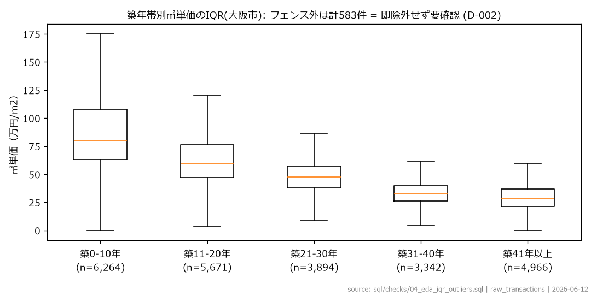
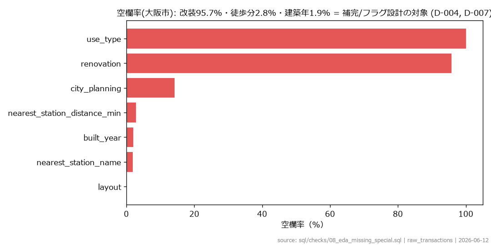

DATA ANALYSIS PORTFOLIO
プロジェクト概要
大阪市内の中古マンション市場を対象に、仕入れ・投資の調査を優先すべき駅をデータから抽出しました。
価格予測モデルを構築し、実際の成約価格との乖離を分析。さらに取引件数・価格安定性・地価・建物リスクなどを統合した独自スコアを作成し、駅ごとの調査優先度を算出しています。
人手なら151駅分の相場調査が必要な「仕入れの初動」を、調査すべき10駅まで自動で絞り込み、配点パターン別(割安重視型/バランス型/リスク重視型)本命駅Top5を選定する仕組みを作った。
※ 10駅＝調査を優先する駅／本命5駅＝そのうち建物リスクが低い駅。
▼ 触って確認：配点パターン（バランス＝総合／割安重視＝安さ優先／リスク重視＝安全優先）を切り替えると、本命 Top5 が入れ替わります。
配点パターンを切り替えると順位（＝仕入れ調査優先駅）が変わる。堺筋本町・玉造・大国町はどのパターンでも上位＝頑健な本命。割安重視では伝法・森ノ宮、リスク重視では谷町四丁目が浮上する（配点の意図に応じて狙いが動く）。 ▶詳細は 配点の詳細（5軸の作り方・3パターンの重み・設計判断）にて
※ 位置づけ： ここで出すのは「次に調べる優先順位」の仮説であり、「買うべき・儲かる」の断定ではない。実際の仕入れ成果（再販利益など）での効果検証は今後の課題（→ §8 結果考察・§9 限界と改善案）。
ここまでが結論（成果）です。ここからは、この成果にどうやって辿り着いたかの分析プロセスを、順を追って説明していきます。下の目次がその道筋です。
課題： 中古マンションの仕入れでは、物件を探す前に「どの駅・エリアから調べるか」を決める必要がある。しかし大阪市内の多数の駅を、価格相場・取引状況・建物リスクまで人手で比較するのは重い。本プロジェクトは、公開データだけで「次に調査すべき駅」を一次スクリーニングする仕組みを作った（買うべき物件の断定ではなく、調査の優先順位づけ）。
学習＝2021〜2024年／検証＝2025年。未来データで検証する時系列分割にして、情報漏洩（リーク）が起きないようにした。
| 領域 | 使用技術 |
|---|---|
| データウェアハウス | Google BigQuery（asia-northeast1） |
| 変換・モデリング | dbt（staging / intermediate / marts・全列に日本語descriptionとテスト） |
| 機械学習 | BigQuery ML（線形回帰・Boosted Tree） |
| 可視化 | Tableau（Public公開） |
| データ取得・検証 | Python（取得スクリプト・読み取り専用の検証スクリプト） |
すべての数値は公開コードから再現できる（BigQuery／dbt 環境を整えれば／§9 再現手順）。
| データ | 出典 | 期間／範囲 |
|---|---|---|
| 中古マンション等 成約価格情報 | 不動産情報ライブラリ（国土交通省） | 大阪府 2021〜2025年（大阪市で約24,600件、絞り込み後7,912件） |
| 鉄道（駅）N02 | 国土数値情報 | 2025年 |
| 地価公示 L01 | 国土数値情報 | 2025年（大阪府） |
分析対象の絞り込み： 大阪市／中古マンション／面積20〜60㎡（投資用ワンルーム〜コンパクト帯＝買取再販の主戦場）／徒歩20分以内／築5〜60年（＝市場の約32%）。
ここは一番こだわった工程。実際に進めた順に、何をどう判断したかをざっくり示す（各工程の詳しい数値・根拠は docs/eda_report.md・docs/decision_log.md）。
① 投入前確認 ― 取得した生データを点検し、完全重複330行・改装の空欄94〜96%・徒歩分の欠損6〜9% などの状態をまず把握。
② EDAで分布・外れ値・欠損・結合性を確認（読み取り専用）― ㎡単価や築年の分布を可視化し、「外れ値がどこに出るか」「欠損が多い列」「取引↔駅マスタが結合できるか」を一気に確認。外れ値の閾値は大阪市スコープで見直した（府全体の閾値では大阪市の正常な高額物件まで外れ値扱いになるため。㎡単価の中央値は府38.8万→大阪市50万円/㎡）。


③ 分析スコープを確定 ― EDAの結果から対象を確定：大阪市・面積20〜60㎡・徒歩20分以内・築5〜60年・価格500万円以上（＝市場の約32%）。対象外の極端値はここで自然に落ちる。
④ staging で型変換・正規化・各処理を実装 ― 型変換（SAFE_CAST でエラー値を無害化）、駅名の表記ゆれを正規化＋名寄せして取引↔駅マスタを結合可能に（結合率100%）。そのうえで外れ値・欠損を列ごとに方針を決めて処理した：
⑤ intermediate で結合・特徴量を算出 ― 駅特徴量（中央値・IQR・取引件数を各Foldの学習期間のみ＝リーク防止）、地価の最近傍マッチング、駅相対乖離などを作成。
このプロジェクトの核。同じ列でも「価格予測に使う」か「駅スコアに使う」かを意図的に分けた。地価や取引件数を予測に混ぜると、本来見つけたい“相場より割安”のシグナルが、それらの変数で説明され尽くしてしまうためだ。
| 用途 | 使う項目 | 狙い |
|---|---|---|
| 予測モデルに入れる | 面積・築年数・駅徒歩分・改装フラグ・新耐震（1982年以降）・駅中央値㎡単価 | ㎡単価を説明する「物件×立地」の基礎属性に限定 |
| スコア側で使う （予測には入れない） |
公示地価 → 地価補足15点／取引件数・価格IQR → 市場信頼性25点／改装「不明」 → データ品質・リスク減点 | 割安シグナルを薄めず、独立した評価軸に回す |
公示地価を予測から外した理由： 地価を予測に入れると「地価が高い駅だから価格も高い」と学習し、本来見つけたい“相場より割安”というシグナルを地価で説明し尽くしてしまう。だから予測には入れず、スコアの地価補足（15点）でだけ使った。
※ 駅中央値㎡単価は、未来情報が混ざらないよう各検証の学習期間のデータだけから計算（リーク防止）。改装は「不明」が9割超のため補完せずフラグ化し、逆選択判定のリスク材料にした。
いきなり複雑なモデルを使わず、単純なベースラインから特徴量を1つずつ足して、何がどれだけ効くかを切り分けられるようにした（BigQuery ML・線形回帰中心、比較用に Boosted Tree も作成）。
| モデル | 加えたもの |
|---|---|
| Baseline | 駅中央値㎡単価そのまま（学習なし） |
| Model A | 面積＋築年＋徒歩 |
| Model B | A＋改装＋新耐震 |
| Model C | B＋駅中央値㎡単価 |
| Model D | C＋公示地価 |
| Model E（Boosted Tree） | C を非線形（決定木の集合）で学習 |
| Model F | C＋時点インデックス |
学習＝2021〜2024年／検証＝2025年の時系列分割。駅中央値などの集計値はその検証で使う学習期間のデータだけから作り、未来の答えを先取りする「リーク」を防いだ。各モデルの精度比較と採用判断は次の「モデル評価」で。
目的は物件価格を正確に当てることではなく「どの駅から調べるか」の順位づけ。だから評価も的中率そのものより駅ランキングが揺れないことを重視した（テスト＝2025年・n=2,097）。
※ hit10＝予測が実勢価格の ±10% 以内に収まった取引の割合（大きいほど良い）／MAE＝予測㎡単価の平均誤差（円/㎡、小さいほど良い）。
※ この精度で十分？ 12万円/㎡のズレは実勢㎡単価の中央値（約50万円/㎡・大阪市）の約2.4割、誤差率の中央値 MdAPE は0.183＝予測の半分は実勢の ±約18% 以内（Baseline 0.286 から改善）。中古は個別性が大きいためこの水準が現実的で、だから“点当て”でなく駅の順位づけに使う。
▼ 触って確認：グラフにカーソルをあてると詳細が表示されます。
ひとことで：F は「全体を底上げ」ではなく「郊外だけ余計に持ち上げる」ため、駅の順位が狂う。だから精度が一番でも使わない。
F は精度1位（hit10 32.9%）なのに、なぜ捨てられるのか。目的が「価格当て」なら F が正解だが、本プロジェクトの目的は駅の順位づけ。鍵は「一様バイアス」と「構造化バイアス」の違いだ。全駅を同率で底上げする一様シフトなら相対順位は保たれる（駅内正規化で相殺される）。だが F の偏り（グラフ③）は周縁の割安区ほど大きい“構造化バイアス”で、駅の順位を入れ替え「偽の割安」を上位に紛れ込ませる＝最も避けたい誤りを生む。だから精度2位でも偏りが小さく順位が安定する C を採った。妥当性は検証①（期間をずらす）と§7 の感度分析で確かめている。
2025年だけに頼らないよう、学習と検証の区切りをずらしてもう一度評価した。期間を変えても hit10・平均バイアスとも安定し、たまたま2025年だけ当たったのではないと確認できた。
| 学習期間 | 検証期間 | hit10 | 平均バイアス |
|---|---|---|---|
| 2021〜2023年 | 2024年 | 31.8% | −6.4% |
| 2021〜2024年 | 2025年（本番） | 26.9% | −9.3% |
※ 平均バイアス＝予測が実勢から平均何％ズレたか（−＝やや過小予測）。学習期間を広げて検証年をずらしても hit10・バイアスとも安定＝特定の年だけの偶然ではない。
予測がまぐれ当たりでなく、納得できる特徴量で決まっているかを確かめた。線形モデルは特徴量ごとに「効き具合」を表す係数を持つが、特徴量は単位がバラバラ（築年は「年」、面積は「㎡」…）で、そのままでは大小を比べられない。そこでスケールを揃えた係数＝標準化係数（ML.WEIGHTS）を見て、どの特徴量がどれだけ価格に効いているかを横並びで比較した。
| 特徴量 | 標準化係数 | 効き方 |
|---|---|---|
| 築年数 | −0.32 | 支配的（古いほど安い） |
| 駅相場（駅中央値㎡単価） | +0.17 | 次に強い |
| 徒歩分 | −0.04 | 弱い |
| 改装フラグ | +0.016 | ほぼ0 |
| 新耐震 | −0.005 | ほぼ0 |
結果は「古いほど安い・駅相場が効く・改装は無力」という不動産の常識とも一致。モデルが意味のある関係を学んでいる（偶然やノイズで当てているのではない）ことの裏づけになる（sql/bqml/04_inspect_weights.sql）。
計算方法（バランス型の例）：駅ごとに次の5つの軸を点数化し、配点で重みづけして合計100点で計算する。
調査優先度(100) ＝ 割安度45 ＋ 市場信頼性25 ＋ 地価補足15 ＋ データ品質15 − リスク減点20
合計＝調査優先度スコア（0〜100にクリップ）。バランス型はこの標準配点で、割安重視／リスク重視は重みを振り替えたもの。
配点に絶対の正解はないので、3パターン（バランス／割安重視／リスク重視）振っても上位に残る駅を 安定候補、その中で建物リスクが低い駅を 本命 とした（感度分析）。
▶ 配点の詳細（5軸の作り方・3パターンの重み・設計判断）：docs/scoring_methodology.md
※ 正直な開示：実測では割安度（相関0.81）と市場信頼性（0.44）が順位をほぼ決め、地価補足・データ品質・リスク減点はほとんど効いていない（地価は割安度と相関0.03、リスク減点は実測でほぼ不発）。等価に見せず、順位は実質「割安度＋市場信頼性」で動く。リスク減点は「稀にしか効かないが旧耐震×改装不明の地雷を弾く安全弁」として残している。
※ 割安度の元になる「駅相対乖離」は、市場全体と駅内で二段に正規化して算出（一様な時点要因と駅ごとの空間要因を相殺し、その駅の相場に対する割安度を測る）。
▼ 触って確認：駅ごとの調査優先度ランキング（配点パターン切替・スコア内訳）を Tableau で操作できます。
表⑤の★のうち調査優先度スコアが高い5駅。これで 151駅 → 本命5駅まで絞り込めた。配点パターンによって変動あり。
| 配点パターン | 本命 Top5 |
|---|---|
| バランス型（主スコア） | 堺筋本町・玉造・大国町・松屋町・中之島 |
| 割安重視型 | 玉造・大国町・堺筋本町・伝法・森ノ宮 |
| リスク重視型 | 堺筋本町・玉造・大国町・松屋町・谷町四丁目 |
※ スコア最上位は平野（割安重視85.6点）だが、旧耐震×改装不明が86%＝典型的な「安いには訳がある」逆選択のため本命から自動除外。
ランキングを出して終わりにせず、自分が出した上位10駅を「逆選択の指紋」（旧耐震率・大型物件への偏り・薄商い・極端な外れ値の集中）で再検証した。結果は 本物っぽい割安が4駅／逆選択が濃厚な1駅（平野）／要・現物確認が5駅。「出した結果を自分で疑う」ところまでを一次スクリーニングの責任範囲とした（詳細：docs/verification_notes.md）。
＝自動除外した平野（旧耐震86%・大型95%・築52年）とは逆選択の指紋が正反対。だから堺筋本町は「本物の割安候補」として本命に残る。
本作は公開データのみでの一次スクリーニング。実務では社内データを足すと精度も実用性も跳ねる：
＝「公開データで枠組みを作り、社内データで磨く」設計。スコアの軸も「次に調べる駅」から「仕入れて利益が出る駅」へ進化させられる。
python scripts/download_transactions.pydbt run && dbt testsql/bqml/01_create_models.sql → 02_evaluate.sqlsql/bqml/03_predict.sqldbt接続には
~/.dbt/profiles.ymlが必要。雛形は profiles.example.yml。認証情報・生データはリポジトリに含めていない（.gitignoreで除外）。
osaka-fudosan-dataanalysis/
├─ README.md
├─ dbt/models/ … staging(3) / intermediate(5) / marts(2)
├─ sql/
│ ├─ checks/ … EDA・投入検証（01〜10）
│ └─ bqml/ … モデル作成・評価・予測・係数・バイアス（00〜06）
├─ scripts/ … Python（データ取得・読み取り専用の検証）
├─ docs/ … work_log / decision_log / 検証ノート
├─ data/
│ ├─ raw/ … 生データ（非公開・.gitkeepのみ）
│ ├─ gis/processed/ … 公開オープンデータの加工CSV
│ └─ samples/ … 公開可能なサンプル
└─ tableau/ … ダッシュボード素材
本プロジェクトの実装にはAIコーディング支援（Claude Code）を活用している。一方で、分析設計の中核 ―― 分析対象の絞り込み、予測特徴量とスコア項目の分離、モデルの採用判断（Model C vs F）、調査優先度スコアの配点、公開データの限界の線引き ―― はすべて自分で判断し、その理由を docs/decision_log.md に記録した。コードを書く速度をAIで上げつつ、「何を・なぜそう判断したか」を自分の言葉で説明できる状態を重視した。
本リポジトリは個人のポートフォリオ。数値は実装時点（2026年）の公開データに基づく。